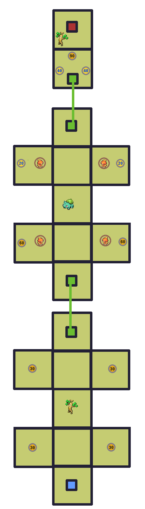

Gauge


Check out WarriorGallade's post on this Mission for more specific tips.
| Rank | AP | Slates |
|---|---|---|
| S | 5 | Torchic (90%) Vileplume (10%) |
| A | 4 | Sudowoodo (100%) |
| B | 3 | N/A |
| C | 2 | N/A |
| Pokémon | Quantity | Group | Friendship Gauge |
AP | Slates | |
|---|---|---|---|---|---|---|
|
|
Bulbasaur | 1 | Grass | 180 | 1 | N/A |
|
|
Sudowoodo | 2 | Rock | 420 | 2 | Sudowoodo (100%) |
|
|
Torchic | 4 | Fire | 168 | 1 | N/A |
| Pokémon | Group | Friendship Gauge |
Agitated Gauge |
AP | |
|---|---|---|---|---|---|
 |
Vileplume | Grass | 560 | 54 | 3 |
Text of this section & map image are taken from WarriorGallade's post on the subject, supplemented with information from the official Prima guide book, and condensed/reorganized slightly. Used with permission.

Legend:
 Icons like this (darker) give the player extra seconds, determined by the number.
Icons like this (darker) give the player extra seconds, determined by the number. Icons like this (lighter) restore the player's Styler by the specified number of energy.
Icons like this (lighter) restore the player's Styler by the specified number of energy.This level introduces treasure chests and powerups. Time powerups in particular are usually necessary for clearing missions, so prioritize them! The map is small with a straight path and simple teleporters. This mission introduces angry Pokémon that attack with projectiles; in this mission, Torchic will shoot flames. Getting hit knocks you off course, doing 1 damage and costing a few seconds. Capture all Torchic and grab chest items, then head for the red teleporter.
Not too difficult, but introduces attack patterns worth remembering. The pollen scatter move doesn't linger long, and the leaf attack is fast, so consistent looping should offset any HP regained during the pollen scatter stalls.
Vileplume's attacks are:
The time limit is generous, but grab all time powerups for extra cushion. Unlikely on your first attempt since you probably lack a strong assist against Vileplume; it is easier to return and S-rank after completing the Forest Temple.
Piplup is a poor fit due to type disadvantage. Drapion has a good matchup and its "tired" assist helps, though its stingers are hard to aim and risky if Vileplume uses its pollen scatter. Pidgeot, obtainable in a later Forest Temple mission, is the best early option thanks to range and type advantage; some later Fire-type recruits also work well. Pidgey is a reasonable earlier substitute, though noticeably weaker.